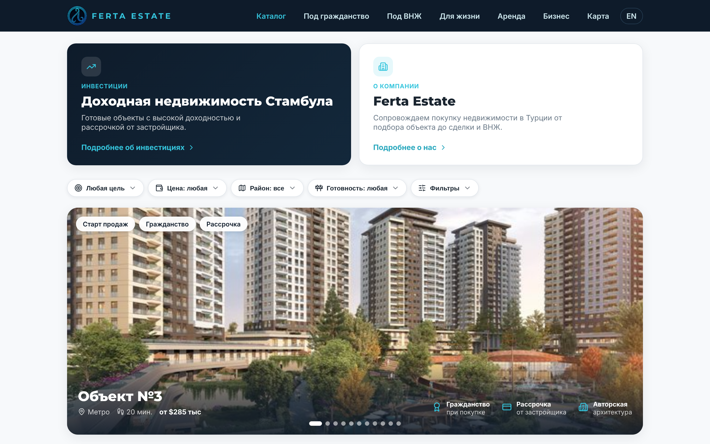

Разобрали сайт fertaestate.com: что уже сделано хорошо, что стоит поправить и чего пока ждать от поиска. Без сложных терминов — так, чтобы было понятно.

Когда человек вводит в Google «купить квартиру в Стамбуле», поисковик показывает ему список сайтов. SEO — это работа над тем, чтобы ваш сайт оказался в этом списке повыше. Чем выше — тем больше людей заходит, и за эти заходы не нужно платить, как за рекламу.
Главная мысль. Ничего не сломано. Сайт — как новый магазин: вывеску повесили недавно, Google ещё составляет о нём мнение. Наша задача сейчас — помочь ему «познакомиться» с сайтом и правильно всё оформить с самого начала.
Представьте новый магазин, который открылся 3 недели назад в большом городе. Мимо прошло ~50 человек, 9 из них заглянули внутрь. Это не провал — это самое начало. Чтобы поток вырос, городу (Google) нужно время привыкнуть, что магазин есть, а нам — повесить понятные указатели.
Пока сайт находят почти только по названию компании — «ferta». Это значит: кто уже слышал о вас, тот доходит. А вот по общим запросам вроде «квартира в Стамбуле» сайт ещё не показывается — над этим и будем работать.
«Карта сайта» — это список всех страниц, который сайт отдаёт Google, чтобы тот ничего не пропустил. У вас она отправлена и без единой ошибки, Google скачивал её 1 ноября. Единственное — в ней 149 страниц, а на сайте уже 166: стоит обновить, чтобы попали все.
Что это значит. «Быстрых побед» в цифрах сейчас искать рано — статистики слишком мало. Поэтому мы наводим порядок в оформлении (следующая страница) и возвращаемся к цифрам через 3–4 недели, когда Google накопит данные.
Поставить фото-превью для ссылок, укоротить заголовки, обновить карту сайта (149 → 166). Это небольшие правки в коде сайта — нужен доступ к нему.
Сделать отдельные страницы под районы и планировки — чтобы сайту было с чем показываться по конкретным запросам покупателей.
Когда накопится статистика, найдём реальные запросы и страницы, которые стоят на 2-й странице поиска, и подтолкнём их в топ. Вот тогда начнётся заметный рост.
Что нужно от вас. Дать доступ к коду сайта — и я внесу правки из пунктов 1–2. А данные Google я уже вижу и прослежу за ними сам.